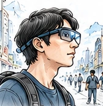
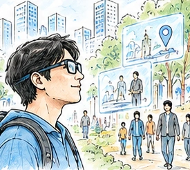

WISE
인간의 역량을 확장하는 착용형 지능
RESEARCH CONCEPT GUIDE
Symbiotic AIR4BTS는 사람과 AI가 경험을 통해 함께 적응하는 연구 프레임워크입니다. 필요한 증거를 포착하고, 맥락과 결과를 기억하며, 새로운 상황에서의 유용성을 확인합니다.
01 / THE FRAMEWORK
기록을 많이 남기는 것보다, 필요한 증거를 선택하고 새로운 맥락에서도 쓸모가 있는지 확인하는 것이 중요합니다.
인간의 역량을 확장하는 착용형 지능
사람과 AI가 반복적으로 적응하는 경험 순환
목적·권리·효용에 맞춘 최소한의 센싱과 증강
인간과 AI 역량의 장기적인 상호 발전

목적과 맥락에 필요한 현실의 단서를 선택해 포착합니다.
무엇을, 왜 포착할까?
증거를 맥락·목표·행동·결과와 연결해, 재사용 가능한 경험 자산으로 만듭니다.
어떤 관계를 기억할까?
필요한 경험을 찾고 적용 가능성을 확인한 뒤, 현재 맥락에 맞게 조정해 필요한 최소한의 XR 증강(Adaptive XR)을 제공합니다.
여기에도 도움이 될까?
새로운 맥락에서 실제로 도움이 되었는지, 부담과 위험은 없었는지 확인합니다.
실제로 더 나아졌을까?
평가와 피드백을 바탕으로 모델·경험 자산·정책을 갱신합니다.
다음에는 무엇을 바꿀까?
측정된 효용·안전·프라이버시·사용자 부담과 피드백으로 월드 모델·경험 모델·XR 경험 자산·정책(상호작용 정책 포함)을 갱신합니다. 인간과 AI 역량의 장기적인 상호 발전(Co-evolution)은 이 반복을 통해 탐구하는 연구 가설입니다.
객체·공간·에이전트·동역학 등 세계의 구조와 변화를 표현합니다. 장면 표현에서는 상태도 함께 다룹니다.
누가, 어떤 목표로, 무엇을 했고, 어떤 결과와 근거를 남겼는지 표현합니다.
AMI와 BTS 사이의 재사용·상호운용 단위입니다. 맥락·경험·근거·XR 리소스·적용 조건·권리·출처·평가를 함께 관리합니다.
목적(Purpose)·권리(Rights)·목표(Goal)·맥락(Context)에 따라 증거를 선택합니다. 착용형·환경 멀티모달 센싱(Wearable & Environmental Multimodal Sensing)으로 현실의 증거를 포착합니다.
월드 모델은 객체·공간·에이전트·동역학을, 경험 모델은 사람(Actor)·목표(Goal)·행동(Action)·결과(Outcome)·증거(Evidence)를 연결합니다.
XR 경험 자산은 3D/4D 표현, 장면 그래프(Scene Graph), 지식 그래프(Knowledge Graph), 행동 가능성(Affordance) 등의 표현을 활용합니다. 자산을 생성하고, 지속적으로 저장·색인·관리하며 출처를 함께 관리합니다.
경험 검색 후 적용 가능성(Applicability), 위험·권리(Risk / Rights), 불확실성(Uncertainty)을 확인합니다. 맥락에 맞게 증강하되, 제한하거나 전이하지 않는 경로도 포함합니다.
전체 구조 원본은 효용(Utility)·안전(Safety)·프라이버시(Privacy)·사용자 부담(User Burden)·일반화(Generalization)를, 경험 전이 원본은 효용·부담·안전·신뢰(Trust)를 평가 관점으로 제시합니다.
02 / EXPERIENCE TRANSFER
재생은 원천 경험을 얼마나 충실하게 보여주는지, 전이는 목표 맥락에서 얼마나 도움이 되는지를 봅니다.
월드 모델, 공간 XR, 기억·검색, 인간 능력 지원, 프라이버시·신뢰 등 구성 요소가 존재하더라도, 원천 경험이 다른 사람·장소·시간·과업에서 유용하게 작동하는지는 별도의 문제입니다.
핵심 연구 질문은 “또 다른 구성 요소가 있는가?”보다 “맥락이 바뀌어도 경험의 효용을 유지할 수 있는가?”입니다.
REPLAY / 재생
원래의 장면이나 수행을 재현합니다.
평가 관점원천 충실도 · Source Fidelity원래와 얼마나 비슷한가?
TRANSFER / 전이
사람·장소·시간·과업이 바뀌어도 유용하도록 적용합니다.
평가 관점목표 효용 · Target Utility지금 이 상황에서 도움이 되는가?
관련 경험 자산을 찾습니다.
적용 조건·근거·권리·위험·불확실성을 살펴봅니다.
목표 사용자와 과업에 맞게 표현과 지원을 바꿉니다.
필요한 지원만 제공하고, 실제 효과를 평가합니다.
센서가 포착하는 것은 관찰 가능한 증거입니다. 경험 자체와 동일하지 않으며, 모델이 맥락과 관계를 구조화해 나중에 무엇이 유용할지 표현합니다.
시각·음성·움직임·시선·상호작용 등
장면: 객체·에이전트·공간·상태
이벤트: 사람·목표·행동·피드백·결과
세계의 상태·변화와, 사람·맥락·목표·행동·피드백·결과를 함께 표현
증거의 시간·신뢰도·출처를 함께 관리하고, 적용 조건과 권리·평가 이력을 연결
콘텐츠만 저장하는 것이 아니라 아래 여섯 층을 함께 관리해, AMI의 기억과 BTS의 적응·전이를 연결합니다.
원본에서 경험 모델·경험 자산·전이 메커니즘은 제안하는 표현·객체·방법으로 표시되어 있습니다. 완성된 표준이나 검증 완료된 성과를 뜻하지 않습니다.
목표 효용에 충분한 최소 증거가 무엇인지 묻습니다.
상황화된 장면·이벤트 그래프(SSEG), 월드·경험 모델, XR 경험 자산으로 구조화합니다.
사람·장소·시간·과업이 바뀌었을 때 전이할 경험을 선택합니다.
효용 개선, 지원 자제, 상호작용 보호를 살피고, 반복되는 상호작용이 사람과 AI의 상호 적응을 지원하는지 탐구합니다.
산업·작업 현장, K-태권도, 문화·박물관, 업무, 일상생활 등을 예시로 제시합니다.
Existing XR Stack
Experience Asset Interchange
Transfer / Utility / Trust Metadata
Experience Interoperability
원본의 Standardization Path를 연구 방향으로 정리한 것입니다. 이미 제정된 표준 목록이 아닙니다.
덜 포착하고 → 더 잘 이해하고 → 구조적으로 기억하고 → 선택적으로 전이하고 → 최소한으로 증강하고 → 효용을 입증하고 → 안전하게 학습합니다.
03 / TRUST & CONTROL
PACES는 목적·권리·맥락에 맞게 증거와 지원 기능을 선택하고 조정하는 원칙입니다.
Privacy-aware Adaptive Capability & Evidence Selection

WISE AIR + PACES
글래스는 이동하며 영상·음성 등을 포착할 수 있습니다. 더 많이 수집하거나 더 자주 개입하는 것이 항상 더 좋은 지원을 뜻하지는 않습니다.
WISE AIR는 인간의 역량을 확장하는 착용형 지능(Wearable Intelligence for Symbiotic Empowerment)을 지향합니다. PACES는 목적·권리·효용의 제약 아래 포착·기억·지원의 범위를 제어하는 제안 메커니즘입니다.
현실을 더 잘 이해하고, 소중한 경험을 남기며 필요한 순간에 다시 활용하고자 합니다. 실시간 도움·맞춤형 경험·일상 기록의 재활용·새로운 증강지능 서비스가 기회입니다. 원본은 업무·건강·여행·취미를 일상 활용 예시로 제시합니다.
모르는 사이 포착되는 타인, AI가 생활과 사람을 계속 분석하는 지속적 관찰·추론, 이동 중 보이지 않는 수집이 문제가 될 수 있습니다.
목적과 권리에 따라 증거·기능을 선택하고, 상황에 맞게 지원 방식을 조정합니다.
개인의 증강지능, 주변인의 권리 보호, 신뢰에 기반한 사회적 수용성과 지속 가능성을 지향합니다.
원본의 비교 관점을 설명한 것이며, 모든 CCTV나 글래스가 항상 이 조건을 충족한다는 뜻은 아닙니다.
Protective Default
목적에 필요한 최소한의 증거만 수집하고, 보호를 기본값으로 둡니다.
Bystander Agency
주변인의 권리와 선택권을 고려하고, 보호를 선택적으로 강화합니다. 구체적인 강화 방식은 구현 시 설계합니다.
Verifiable Transparency
수집과 지원의 상태·범위를 확인할 수 있게 합니다.
Auditability
정책·기록·검증 근거를 관리해 사후 확인이 가능하도록 합니다.
무엇을 위한 지원인지, 누구의 데이터인지, 안전·프라이버시 제약은 무엇인지 정합니다.
영상·음성·관성 센서(IMU)·깊이·위치·맥락 중 필요한 증거만 선택합니다.
선택(Select)·형식 변환(Transform)·맥락 조정(Adapt)·축소(Reduce)를 통해 증거와 지원의 범위를 조정합니다.
프라이버시 위험, 권리 조건, 효용의 충분성을 확인해 안전과 검증 상태를 점검합니다.
실시간 피드백·개인화된 도움·성과 향상을 지원합니다. BTS에서는 검증 결과에 따라 전이·제한·미전이를 판단합니다.
목적·권리·맥락을 바탕으로 무엇을 포착하고, 어떤 지원을 허용·조정·제한할지 정합니다.
선택된 증거를 포착·이해하고, 구조화해 기억하며, 적용 가능성을 확인해 전이합니다. 평가와 피드백은 모델·자산·정책을 갱신합니다.
Vision · 시각 / Audio · 음성 / IMU · 움직임 / Depth · 깊이 / Location · 위치 / Context · 맥락 중 필요한 증거만 선택합니다.
안전과 검증 상태를 확인하고, 실시간 피드백·개인화된 도움·성과 향상으로 연결합니다.
목적·권리·맥락에 필요한 만큼만 포착합니다.
도움을 얻기 위해 꼭 필요한 개입만 제공합니다.
성과·학습·유지(Retention)·안전을 살피고, 자원 비용과 사람의 부담을 함께 고려합니다. 유지의 구체적인 측정 대상은 과업에 따라 정합니다.
최소 필요 지능은 충분한 증거 + 효과적인 개입 + 사람의 선택권·통제권(Human Agency)을 함께 고려합니다. 기본 보호, 로컬 우선(Local-first), 주변인의 선택권, 투명성, 감사 가능성은 원본의 최소 개입 원칙을 뒷받침합니다. 로컬 우선은 데이터 처리에서 로컬 방식을 우선 검토한다는 의미로 설명하며, 구체적인 구현 방식은 별도 설계 대상입니다.
효용·안전·프라이버시·사용자 부담을 함께 평가합니다.
더 나은 일상과 기회, 실제 도움이 되는 기술을 지향합니다.
존중받는 프라이버시와 함께 더 안전한 사회를 지향합니다.
신뢰할 수 있는 생태계와 지속 가능성을 지향합니다. 이는 원본의 미래 비전이지 이미 달성한 성과가 아닙니다.